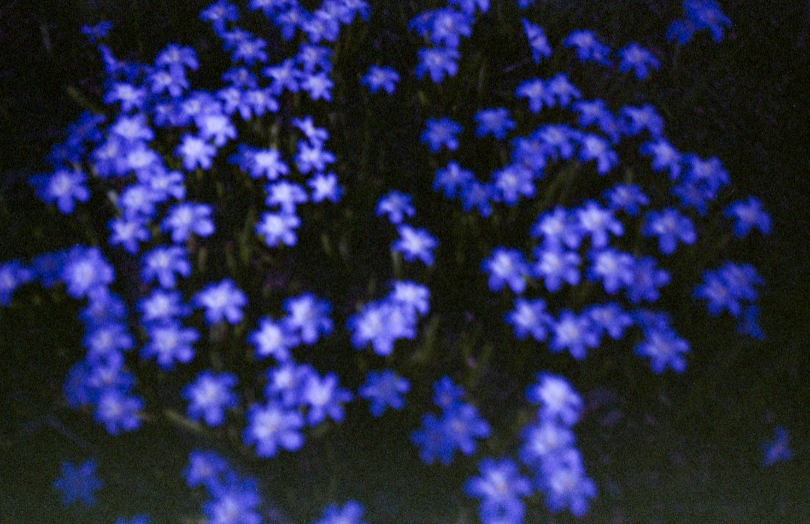
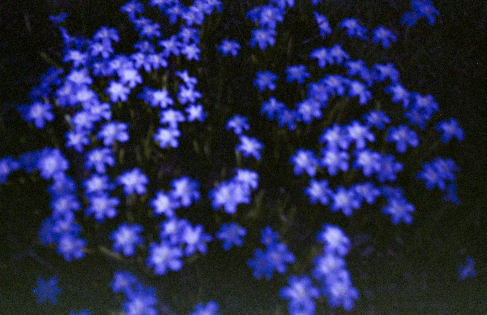
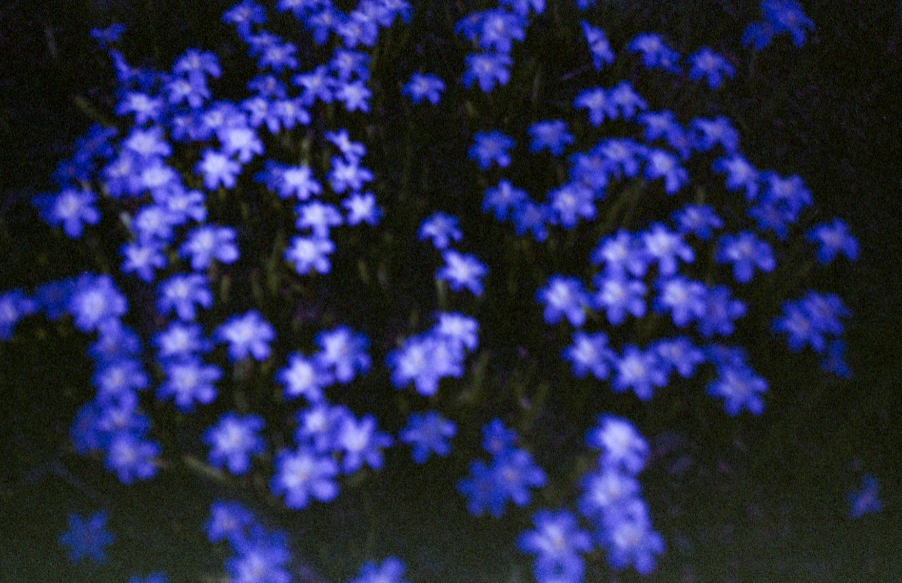
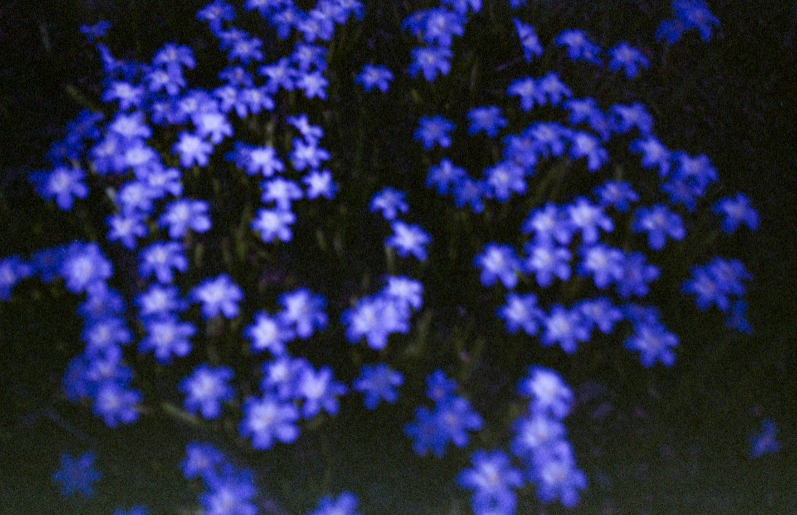

biography
Amber Silloway is a 21-year-old photographer originally from Randolph, Vermont, where she grew up in a family of sugar makers and dairy farmers. Throughout her childhood Silloway had a consistent interest in the arts, which became more prevalent in high school when she realised her true interest was in Photography. Silloway is currently based in Boston, MA, and will receive her BFA in Photography at Massachusetts College of Art and Design in May of 2021. She is inspired by the works of Uta Barth, Rinko Kawauchi, Laura Letinsky, and Julia Margaret Cameron. In her most recent project titled Catharsis in Isolation, Silloway explores concepts such as coping, mental illness, identity, and exploration of self. Using a combination of photographs shot both digitally and on 35mm color film, her work showcases a large variety of self portraiture, still life, and experimental abstract imagery in which she invokes themes such as catharsis, self healing, and escapism.
interview
Amber Silloway in conversation with Emma Odell
EO: When did you become interested in photography? Was there a specific moment or time in your life that made you choose photography?
AS: I became interested in photography in my early teens. I remember asking for a camera when I was around 13 years old. This interest continued into high school, where I decided to attend a vocational school called the Randolph Technical Career Center (RTCC). My time at RTCC was very pivotal for me. There I attended two programs: Graphic Arts and Digital Filmmaking. Out of these two programs I realized that my common interest was in photography, so I went with it.
EO: Who are some of your inspirations and influences, within photography or other mediums?
AS: Uta Barth, Nan Goldin, Laura Letinsky, Emmet Gowin, Rinko Kawauchi, and Julia Margaret Cameron are some photographers that really inspire me. I also find a lot of inspiration in song lyrics lately, most prominently by a band called Seawolf. Additionally, I draw a lot of my creative energy from immersing myself in nature.
EO: Is there a specific issue or theme that you want to address in your work in general?
AS: The biggest overarching theme in this project, Catharsis in Isolation, is in the title: catharsis. This project has helped me cope with my mental illnesses over the course of this turbulent year. My creative process allows me to escape reality when I’m feeling uneasy or overwhelmed, which is often. On the other hand this work has also helped me find my voice. It has helped me come closer to knowing who I am and who I want to become. Really, this project is an exploration of myself, it’s not meant to serve anyone but me.
EO: What do you aim to achieve through this project? What message do you want to get across?
AS: This is a tough question, because I didn’t go into this project with a goal in mind. In fact, when it began I hardly really knew what I wanted it to become. At first, I really struggled to accept that I didn’t have to make work with other people in mind. I’ve had to come to terms with the fact that I’m allowed to make art selfishly. Now, I’m able to feel confident saying that the only intention I had in creating this work was to engage in a conversation with myself, and to continue to use my creative process as a self-healing process.
EO: What role does your medium or process have in your work?
AS: My creative process is very personal to me, I usually reach for my camera in moments when I’m feeling especially unhappy or uneasy. The act of making images usually eases my mind at least a little. It provides a sense of accomplishment and relief that is unmatched by any other coping mechanism I’ve developed for myself.
It’s also worth noting that I shoot a combination of digital and film. I use expired 35mm color film and shoot using a Minolta F20r point and shoot. I feel the combination of using this camera and shooting expired film really speaks to this lack of control I often feel within my own head. I never know what the film might look like when I get it back from the lab. I have very little control over whether my images will be in focus, what the colors will look like, etc. This relates to how life in general has felt this past year; unexpected and often out of my control. I never know what is going to happen next. I quite enjoy the relation between this process and my life experiences.
EO: Do you think about your audience within your practice? Who do you make work for?
AS: Like I said previously, this work isn’t made with anyone in mind but myself. I used to admit this reluctantly, but I’ve learned that it’s okay to make work selfishly. The making of the images within this project have not only helped me cope with various traumatic events, but they have also allowed me to come to terms with myself as I am right now. This project illustrates a conversation between myself and my camera. As the viewer, you get to listen in on this conversation. In the best case scenario, the viewers of this work will be able to relate to it in some way. That is all I can hope for.
EO: Do you feel like your work fits into a genre or style of photography?
AS: This is a tough question. I’m not really sure what genre I would place this work into. In general, I don’t really like assigning labels to my art, because I feel it’s better off left untouched and accessible to all eyes. Perhaps I just need more time to come to a conclusion about what genre or style I feel could fully encapsulate and represent this work. As of right now, I’m happy to let it exist without a label.
EO: What does your creative process look like? When you make an image, what prompts you to make it?
AS: My creative process often doubles as a meditative self-healing process. As I mentioned previously, I’m usually drawn to my camera in moments when I’m feeling especially unhappy or uneasy, or at times when I’m super anxious. Almost all of my self portraits are made late at night when my mind is racing and I can’t sleep. There is something about the act of turning the camera towards myself that distracts me from the seemingly endless stream of overwhelming thoughts. Most of the other images in this project are shot while I’m out walking by myself. Similarly to how I shoot my self portraits, sometimes I find myself needing to take a walk when I’m feeling mentally unwell. The act of going outside, immersing myself in nature, and looking at it through my camera almost always calms me down.
EO: As we come to the end of the semester, where do you think you’ve landed with your work? How do you talk about your work now, vs at the beginning of the semester or year?
AS: Thinking back to the beginning of senior year, I can honestly say I’m really proud that I’ve been able to create a project like this. With all that has been going on, I definitely struggled to stay creatively motivated and I think it’s quite the accomplishment to have created anything given the troubling circumstances life has thrown our way this past year. I had a general idea of what I wanted this project to be when it began, but I never would have imagined it would evolve into something that holds this much emotional and personal value to me. Over the course of the year I’ve been able to start putting my thoughts into words in order to more effectively communicate what this project means to me.
EO: What is your biggest takeaway from your time at MassArt?
AS: I think my biggest overall takeaway from my time at MassArt would be how much I’ve grown as a person. When I first moved to Boston, away from my small town and family-run dairy farm in the middle of rural Vermont, I didn’t know who I was or who I wanted to be. I didn’t have a voice. The change in environment was shocking to me, but it forced me to open my eyes. The experience of being surrounded by amazing, creative, beautiful people has uplifted me and given me the confidence to find an identity for myself. I’m so thankful for the community I’ve been able to become a part of. My experiences here have truly helped shape me into the person I am today, and for that I am extremely grateful. I will always cherish the memories made during my time at MassArt.